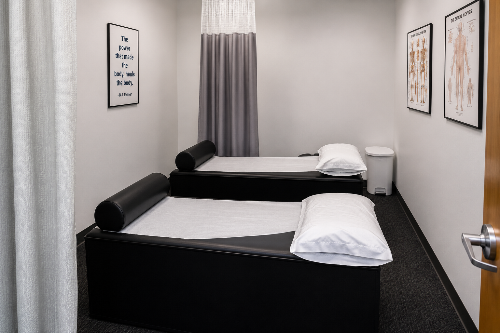
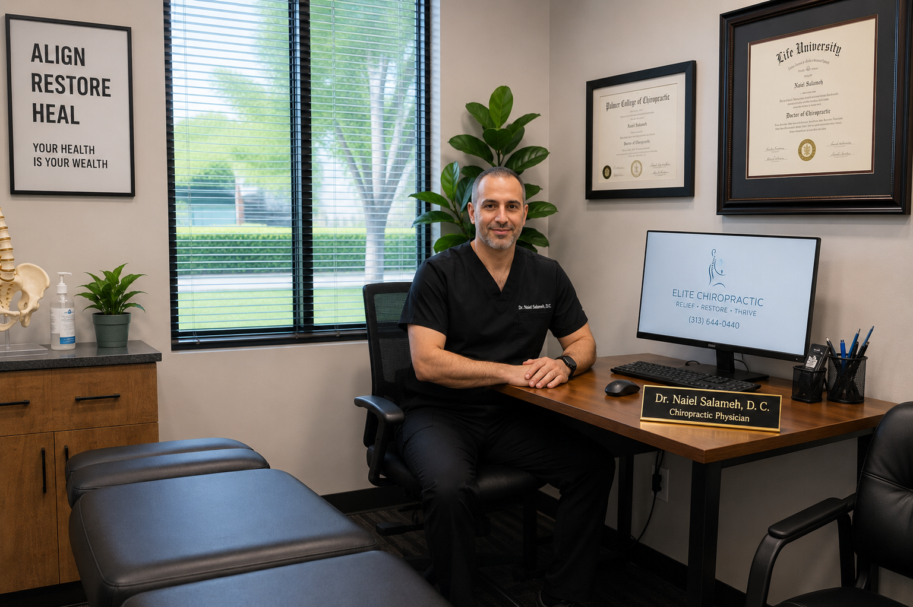

Chiropractic Services In Dearborn
Care For Pain Relief, Injury Recovery
And Better Movement.
Chiro One Sports & Spine Center provides chiropractic care, auto accident injury support, physical therapy, sports injury recovery, back pain treatment, neck pain treatment, and wellness care for patients in Dearborn and surrounding communities.

Services
Professional Care Built Around Your Condition.
Every patient’s needs are different. Our office helps patients dealing with accident-related injuries, chronic pain, sports-related discomfort, mobility limitations, and wellness goals.
Auto Accident Injury Care
Care for accident-related pain, stiffness, whiplash symptoms, headaches, neck pain, back pain, and mobility concerns after a collision.
Whiplash Treatment
Focused care for neck stiffness, headaches, shoulder tension, and reduced mobility that may appear after a car accident.
Back Pain Treatment
Support for lower back pain, mid-back discomfort, muscle tightness, and movement limitations affecting daily life.
Neck Pain Treatment
Chiropractic care for neck pain, stiffness, headaches, tension, and discomfort from injury, posture, or repetitive stress.
Physical Therapy
Rehabilitation support designed to improve strength, mobility, stability, function, and recovery after injury or pain.
Sports Injury Recovery
Care for athletes and active patients dealing with sports injuries, overuse pain, mobility limitations, and return-to-activity needs.
Sports Medicine Focus
Dr. Naiel Salameh, D.C. brings a sports medicine background to injury recovery, chiropractic care, and patient-centered treatment.
Wellness Chiropractic Care
Ongoing chiropractic care focused on alignment, mobility, prevention, function, and long-term wellness.
Appointment Availability
Not sure which service you need? Submit a request and our office will follow up regarding appointment availability.
Highest Priority Care
Auto Accident Injuries Should Not Be Ignored.
Auto accident symptoms may not appear immediately. Neck pain, back pain, headaches, stiffness, and whiplash symptoms can develop hours or days after a collision.
- Car accident injury evaluation
- Whiplash and neck pain care
- Back pain after impact
- Headaches and stiffness
- Mobility and movement limitations
- Accident-related symptom documentation

Why Choose Chiro One
Comprehensive Care In A Professional Dearborn Office.
From your first visit to your recovery plan, our team focuses on clear communication, personalized care, and helping patients take the next step toward better movement and less pain.
Patient-Focused Evaluation
Our office takes time to understand your symptoms, health history, movement limitations, and care goals.
Injury Recovery Support
Care is designed for patients recovering from auto accidents, sports injuries, back pain, neck pain, and stiffness.
Rehabilitation Integration
Physical therapy and rehab support may be included to help improve strength, mobility, and functional recovery.
Convenient Dearborn Location
Located at 6 Parklane Blvd Building 6 in Dearborn, Michigan, serving patients throughout the surrounding community.
Request Care
Request Appointment Availability
Tell us what you need help with and our office will contact you regarding appointment availability.
Take The Next Step
Need Chiropractic, Injury, Or Recovery Care?
Request appointment availability and our team will follow up with next steps.